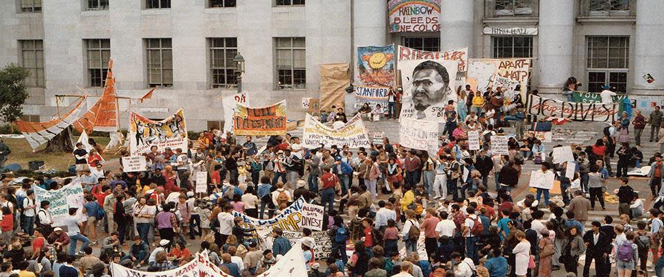
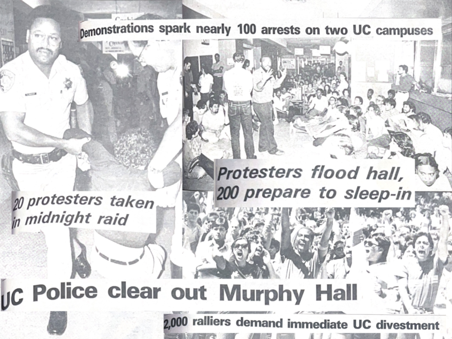

December, 1984, UC Berkeley students walked off campus to the administrative offices for the whole University of California system.They demanded that the University of California withdraw investments in companies conducting business with South Africa’s government (One Bold Idea.)
At the time, the UC regents were the biggest university investors of South Africa, with an estimate of $4.6 billion in contributions.
March, 1985: Activists began a sit-in in which they brought sleeping bags outside of Sproul Hall. Throughout the week, thousands of protestors came and hundreds decided to camp out. 10,000 students boycotted classes when police began cracking down and arresting protestors. The protest had become a movement that gained support from prominent celebrities, like Alice Walker and Bishop Desmond Tutu.
In May, 1985, the Regents held a public forum where they discussed divestment, but the steps proposed were not enough. Protests continued for another year. Schools and American cities began to divest.
In July 1986, the Regents voted to divest $3.1 billion from companies conducting business with apartheid government. This was the largest university divestment in the country.
When Nelson Mandela was released in 1990, he visited Oakland to thank students and faculty of Berkeley for their successful efforts in the anti-apartheid movement.

On April 23rd, 1985, more than 2,000 community members and students rallied in front of Murphy Hall. Protestors demanded that the UC Regents completely divest from South Africa. UCLA’s Black Student Alliance and the Undergraduate Students Association Council sponsored the protest. It was the largest political protest on campus since the Vietnam War.
750 people staged a sleep-in inside Murphy Hall. 200 students remained in the building by the end of the night. Organizers described that they were inspired by similar protests across the country, such as the one in UC Berkeley.
The Undergraduate Students Association Council President, Gwyn Lurie demanded that the UC drop charges on the 159 UC Berkeley protestors arrested and that campus communities across the UCs should hold a discussion regarding the UC’s investments.
“The university is directly and indirectly involved in the enslavement of black South Africans under a racist, apartheid regime...Divestment from any corporations that any business in South Africa is the only choice for moral individuals.”
Gwyn Lurie’s statement to the Daily Bruin in 1985.
Students and faculty aligned with the Faculty for Divestment. On June 10th, with the administration’s permission, there was an encampment on Dickson Court South that coincided with a UC Regents meeting. Through teach-ins on campus, faculty aimed to help students learn about region and divestment while students organized “tent cities.” While demands in Berkeley focused on the economic impact the university contributed to the apartheid government, UCLA came down to morals and ethics.
Other collaborators included Students for Justice in Palestine, the UC Divest Coalition at UCLA, and Faculty for Justice in Palestine at UCLA. 279 faculty and staff signed a systemwide letter to the UC Regents demanding non-violent student protests are protected and that students are not arrested or punished for their actions.
“Entire academic departments owe their existence to nonviolent student protests at the University of California. The nationwide student movement to end the Vietnam War can trace its beginnings to nonviolent student protests at the University of California…As faculty and staff at the University of California, we believe that the ability to protest nonviolently is essential to our democracy and a basic human right that must be respected and protected.”
The history of divestment movements across the University of California demonstrates that universities are not neutral institutions, but active participants in global economic and political systems. While academic spaces often teach about injustice, students have repeatedly challenged the contradictions between these lessons and the universities’ financial practices.
From the anti-apartheid protests of the 1980s to contemporary divestment movements, students and faculty have organized to demand that their institutions act in accordance with the ethical values they claim to uphold. These movements reveal that universities are deeply embedded in neoliberal systems that prioritize profit and investment, sometimes at the expense of human rights.
Yet they also show the power of collective action within academic communities. By refusing to remain passive observers, students have transformed campuses into sites of resistance, demonstrating that education is not only about learning about injustice, but also about confronting and changing it.
← Back to timeline